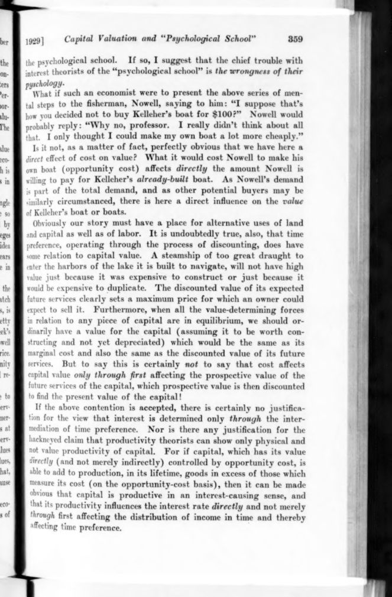

Frain, 1929: o salário por hora não é o mesmo em toda a cidade
Leitura: 8 min
Com dados de 1.456 operadores de máquinas de Filadélfia, Frain contesta que taxa e ganho se convertam um no outro e que a taxa seja a mesma entre empregadores de uma localidade.


Numa semana de abril de 1927, oitenta e três fábricas metalúrgicas da região de Filadélfia informaram ao Industrial Research Department da University of Pennsylvania os ganhos efetivos, as horas trabalhadas, a ocupação e o método de pagamento de cada um de seus 25.459 empregados, excluídos diretores e escritório. Segundo H. LaRue Frain, do mesmo departamento, foi o levantamento mais intensivo do gênero já feito na região. Com ele, Frain escreve no número de setembro de 1929 da American Economic Review um artigo contra duas hipóteses que encontrava com frequência em estudos de salários.
A primeira é que as taxas, o salário por hora, podem ser calculadas a partir dos ganhos semanais, e os ganhos a partir das taxas. A segunda é que as taxas de uma mesma ocupação não costumam variar entre empregadores de uma mesma localidade. O autor encontra as duas num levantamento recente do National Industrial Conference Board, Wages in the United States, que afirmava que as taxas de uma ocupação não costumam variar entre empregadores de uma localidade, embora possam variar bastante entre localidades.
Em nota, Frain argumenta que se trata de hipóteses, e não de conclusões do estudo: o questionário-modelo daquele levantamento não perguntava o método de pagamento, e as fichas das fábricas não foram analisadas uma a uma. Em outra nota, atribui parte da confusão ao próprio termo “salário” na teoria econômica, que, ao contrário dos juros, sempre referidos ao ano, não traz um período de tempo definido.
Que trabalhadores foram observados?
Para concentrar a discussão, Frain escolhe sete ocupações-padrão de operação de máquinas-ferramenta: furadeira, fresadora, torno revólver, torno automático, torno mecânico, plaina e mandriladora. Nelas trabalhavam 1.456 homens, em 43 das 83 fábricas. São ocupações, diz, especializadas num sentido e gerais em outro, porque existem onde quer que haja oficina mecânica; dificilmente se acharia série mais homogênea, e é com base nelas que os empregadores anunciam vagas. Pela classificação usual, praticamente todos seriam trabalhadores qualificados.
Taxa e ganho são intercambiáveis?
O autor distingue a taxa básica, a que empregador e empregado usam para calcular o pagamento, da taxa obtida, que resulta de dividir o ganho efetivo pelas horas trabalhadas. A hipótese de que uma se converte na outra supõe implicitamente que as duas são praticamente iguais. Isso só valeria em condição ideal: todos trabalhando o mesmo número de horas, digamos 50 por semana, e todos pagos por tempo. Nesse caso, a média das taxas multiplicada por 50 daria a média dos ganhos.
Na prática, mostra Frain, essa condição está longe. Nas 43 fábricas havia três métodos de pagamento: por tempo, por peça e por prêmio ou bônus, este combinando tempo e produção. Só em 14 fábricas o pagamento era exclusivamente por tempo. Dos 1.456 homens, 380, ou 26 por cento, ganhavam por tempo; 749, ou 52 por cento, por peça; os 22 por cento restantes, por bônus. Como a taxa por peça precisa ser convertida em taxa obtida antes de qualquer comparação, a hipótese serviria, na melhor das hipóteses, para menos da metade dos trabalhadores, e com segurança só para cerca de um quarto.
O que o bônus faz com a taxa?
A dificuldade maior está nos sistemas de bônus, em que a taxa básica também é expressa por hora, como no pagamento por tempo, o que leva a supor que as duas sejam comparáveis. Frain descreve as formas de estímulo que separam a taxa básica da taxa obtida. O tempo-padrão fixado para cada tarefa pode ser generoso, com 10, 20 por cento ou mais acrescentados ao tempo esperado. O trabalhador pode ser creditado com todo o tempo economizado ou só com uma parte, talvez 50 por cento, ou ainda com todo ele a uma taxa especial menor. E a própria taxa básica pode ser manipulada.
“Com as demais coisas iguais, quanto mais liberal o plano nesse aspecto, maior será a diferença entre a taxa básica e a taxa obtida.” (With other things equal, the more liberal the plan is in this regard the greater will be the difference between basic and earned rates.)
O exemplo do autor é uma fábrica de um produto conhecido nacionalmente que mantinha para certa ocupação uma taxa básica bem abaixo de 70 centavos por hora, sabendo que esses trabalhadores precisavam obter cerca de 70 centavos para não ir embora. A empresa preferia segurar a taxa básica e tornar o resto do plano generoso, para não dar a impressão de elevar o nível salarial. Os dados de Filadélfia mostram a consequência: taxas obtidas e ganhos semanais cerca de 10 por cento maiores para quem ganhava por peça e cerca de 20 por cento maiores para quem ganhava por bônus, em relação aos pagos por tempo.
A taxa é a mesma entre fábricas?
Para a segunda hipótese, o autor usa a taxa média obtida por ocupação em cada fábrica, que chama de taxa média da fábrica, e concentra a atenção no torno mecânico, a máquina-ferramenta mais usada e a que tinha mais homens. Para os 412 operadores de torno mecânico, a menor taxa média de fábrica era de 48,8 centavos por hora e a maior de 98,6, uma diferença de 49,8 centavos. Em duas ocupações a diferença chegava a 65 centavos. Só uma fábrica, com 73,6 centavos, tinha taxa igual à média da ocupação; 24 ficavam abaixo e 10 acima.
Frain reconhece que, para muitas fábricas, as taxas médias ficavam entre 65 e 75 centavos por hora, uma faixa de cerca de 10 centavos, e que poderia haver justificativa para falar numa faixa de taxas aplicável à maioria delas. Mas isso, escreve, é bem diferente de dizer que as taxas de uma ocupação não variam entre os empregadores de uma localidade.
E nas condições mais favoráveis à hipótese?
Para dar à hipótese a melhor chance, o autor isola os homens pagos por tempo que trabalharam a jornada normal de suas fábricas, caso em que taxa básica e taxa obtida deveriam coincidir. Eram só 242 dos 1.456. Mesmo assim, para o torno mecânico a diferença entre as taxas médias de fábrica era de cerca de 28 centavos, de 56,0 a 84,0, contra uma média de 65,8 centavos para todos os operadores. Os ganhos semanais variavam na mesma proporção: de 26,88 a 40,32 dólares, uma diferença de 13,44 dólares, diante de uma média de 33,33.
Frain observa apenas uma tendência um pouco maior de concentração dos ganhos semanais em torno de um único valor do que das taxas horárias, mas lembra que se baseia em apenas 24 fábricas. A pergunta do artigo, insiste, não é essa, e sim se as taxas obtidas são as mesmas entre empregadores.
Qual é a conclusão?
A conclusão geral é que os dados das fábricas metalúrgicas de Filadélfia não sustentam nenhuma das duas hipóteses. Há razões fortes para duvidar do cálculo de taxas a partir de ganhos e de ganhos a partir de taxas, e a variação das taxas obtidas entre fábricas recomenda levar em conta o método de pagamento em toda comparação salarial, sobretudo quando a proporção de homens pagos por tempo, por peça e por bônus muda entre os grupos comparados.
“Praticamente não há apoio para a hipótese de que, em geral, as taxas pagas por uma ocupação não variam entre empregadores de uma dada localidade.” (there is substantially no support for the assumption that usually rates paid for an occupation do not vary among employers in a given locality)
Em nota, o autor anuncia um estudo mais completo sobre os ganhos nessas ocupações, a ser publicado pelo Industrial Research Department na editora da University of Pennsylvania.
Na minha leitura
Na minha leitura, o artigo é um exemplo do trabalho empírico que departamentos universitários de pesquisa industrial faziam no fim dos anos 1920, com fichas individuais de folha de pagamento em vez de médias agregadas. O alvo é metodológico: as séries salariais agregadas da época, como as do National Industrial Conference Board, embutiam hipóteses sobre a homogeneidade dos salários que os dados por fábrica não confirmavam.
O artigo também documenta a difusão dos sistemas de pagamento por peça e por bônus na metalurgia americana da administração científica, e mostra como eles tornavam o salário por hora um número menos simples do que parecia. A dispersão salarial entre empresas para trabalhadores semelhantes, que Frain mede, seria décadas depois um tema central da economia do trabalho.
Glossário
- Taxa básica
- salário por hora usado por empregador e empregado para calcular o pagamento.
- Taxa obtida
- ganho efetivo dividido pelas horas trabalhadas; difere da taxa básica nos sistemas de peça e bônus.
- Sistema de bônus ou prêmio
- pagamento que combina uma taxa por hora com um adicional pelo tempo economizado em relação a um tempo-padrão.
- Taxa média da fábrica
- média da taxa obtida pelos homens de uma ocupação numa fábrica; termo de Frain (average plant-rate).
Fontes
- Two Errors in Interpreting Wage Data — H. LaRue Frain (Industrial Research Department, University of Pennsylvania) (pp. 378–392). Internet Archive (número completo, PDF)
- Edição completa, com os demais artigos: Nº 214 do Arquivo.
Documento em domínio público (EUA, publicado antes de 1931), via JSTOR Early Journal Content e Internet Archive. Resumo e comentário do autor deste site, sem afiliação com a American Economic Association. Encontrou um erro? Escreva: a correção é publicada no próprio texto, com data.
← Cummins, 1929: por que a junta de arbitragem da construção caiu ↑ Nº 214 · Danielian e o crédito ao consumidor, Cummins e a junta da construção, Frain e os salários de Filadélfia, Brown e o valor do capital Danielian, 1929: o crediário promete mais satisfação do que entrega →